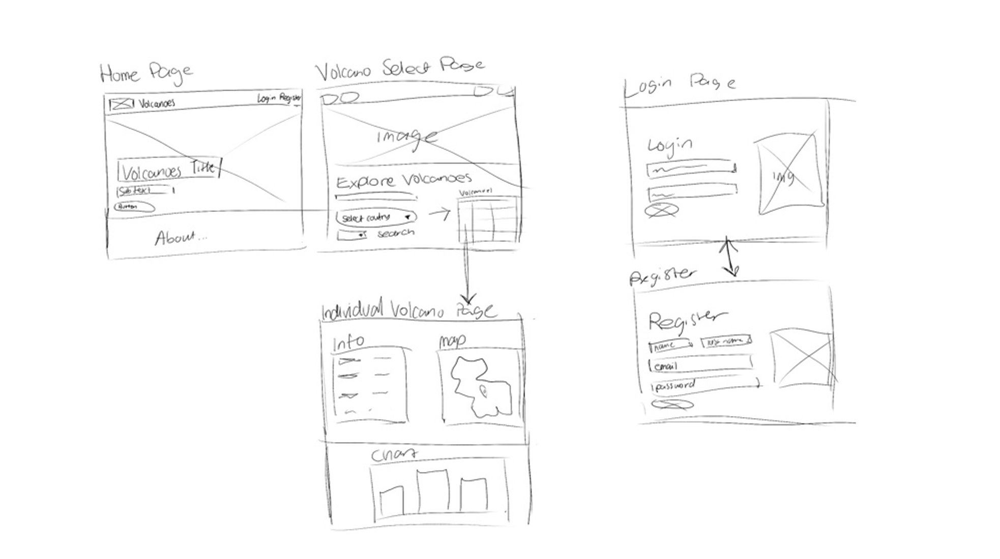
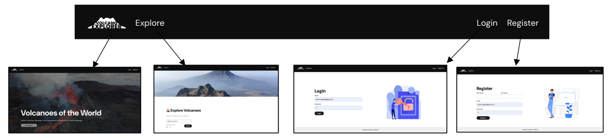

Allows for country selection.
What is Volcano Explorer?
This assignment required the development of a React-based web application for users to access and analyse volcano data via a REST API. The application serves as a centralised platform for exploring and analysing the global distribution of volcanoes, offering detailed insights into each volcano's location, eruption history, elevation, and population density across different regions and countries. By presenting volcano information in an organized and user-friendly interface, the app allows for exploration and understanding of volcanic activity worldwide.

Use of Endpoints
Application Preview
text abt video
Module Use
 Chart.js
▼
Chart.js
▼
Chart.js is a JavaScript library for creating responsive, interactive charts.
Application Design
I aimed for a clean, user-friendly design with a minimalist aesthetic. The site features large, relevant images
to fill blank spaces and a color palette that's easy on the eyes but still modern. The font choice, Helvetica
Neue, aligns with the minimalist theme. Below are some wireframe sketches that guided the final design.

The navigation bar is simple and includes only the essentials: the site logo, explore page, login, and register.
When logged in, the login/register buttons transform into a logout button. The nav bar is sticky and accessible
on every page to help users navigate easily without getting lost.

The only pages users can't access directly are the individual volcano pages, due to the large number of volcanoes. They must first select a country on the explore page. Navigation is simple, with options to go back via the nav bar or browser back button.
Accessibility
This is an analysis of the site from the perspective of accessibility. I have used the checklist from the W3C to
assist.
This project was an exciting opportunity to push the boundaries of conventional web design while catering to my
client’s creative vision. It allowed me to experiment with 3D elements in code and dive deeper into JavaScript,
HTML, SCSS, and various libraries to bring a truly unique concept to life. Additionally, managing version control
throughout the process ensured a seamless workflow and collaboration.
Eek showcases my ability to merge creativity with technical expertise, delivering an interactive,
unconventional portfolio that serves both as an artistic statement and a functional tool. It also highlights my
adaptability in working closely with clients to refine and iterate ideas into a polished final product.
Eek reflects the intersection of design and technology, and I’m proud to have developed something so distinct and
impactful.